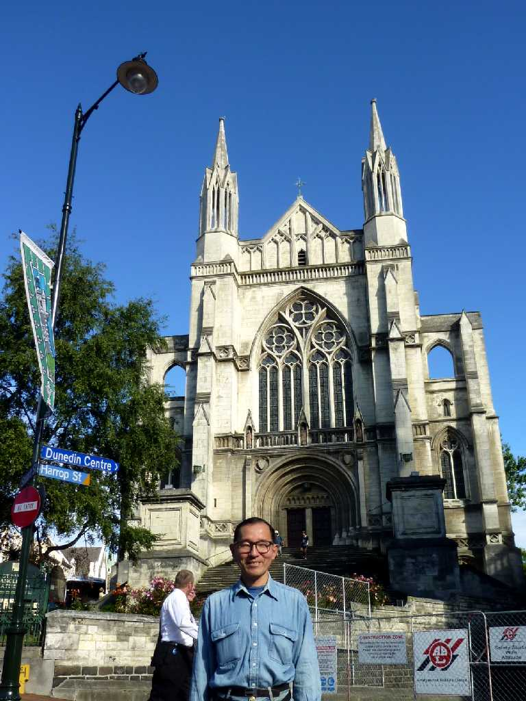
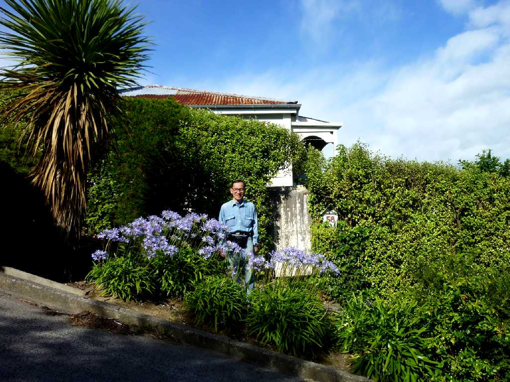

Town Hall The Octagon Dunedin
スコットランド移民により創られゴールドラッシュで１９世紀後半に産業と商業の中心地として栄えたビクトリア朝の建物が数多く残る美しい街

February 10 2011 St. Paul's Cathedral Dunedin

The steepest street in the world Baldwin Street Dunedin
ギネスブックで認定された公道で世界一急な坂道 最大勾配 ３５％ １９°１：２.８６ アスファルト舗装では夏場にタールが流れてしまうためコンクリート舗装となっている